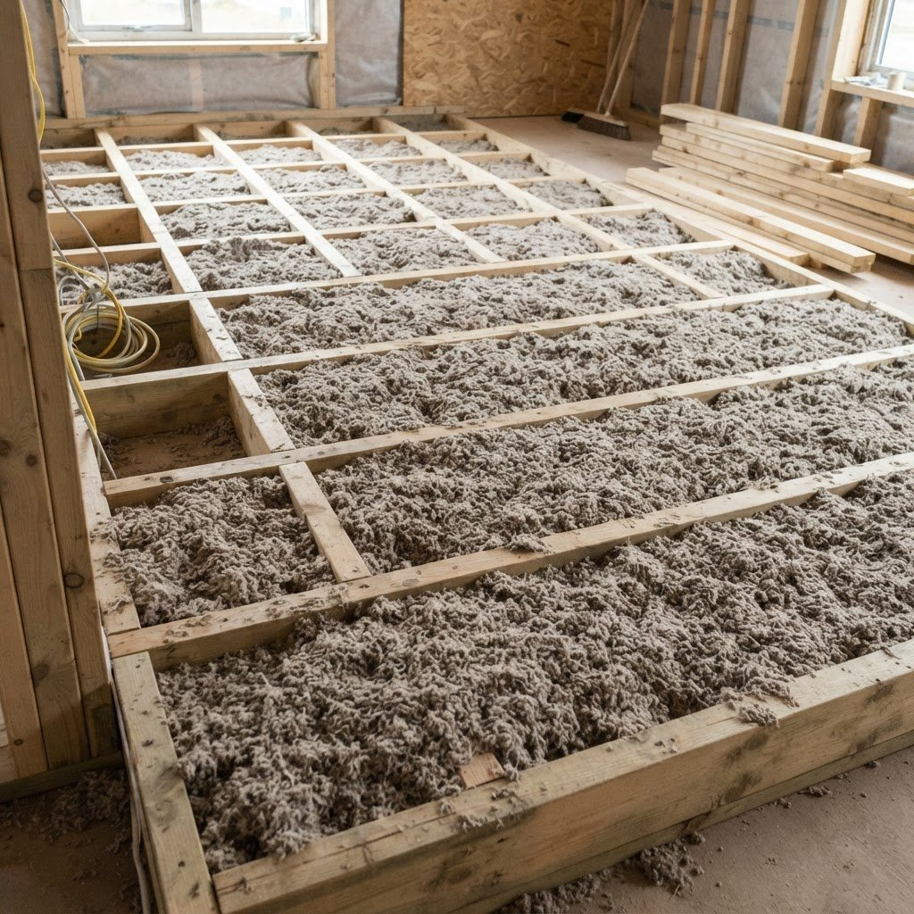
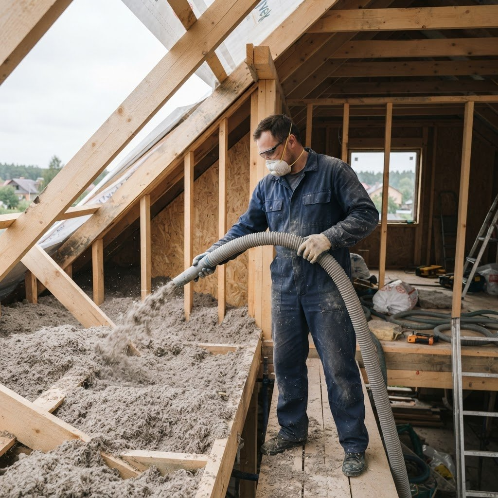
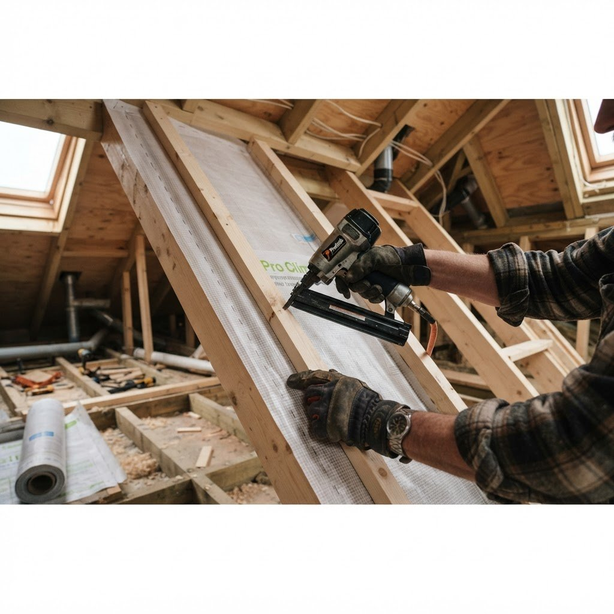
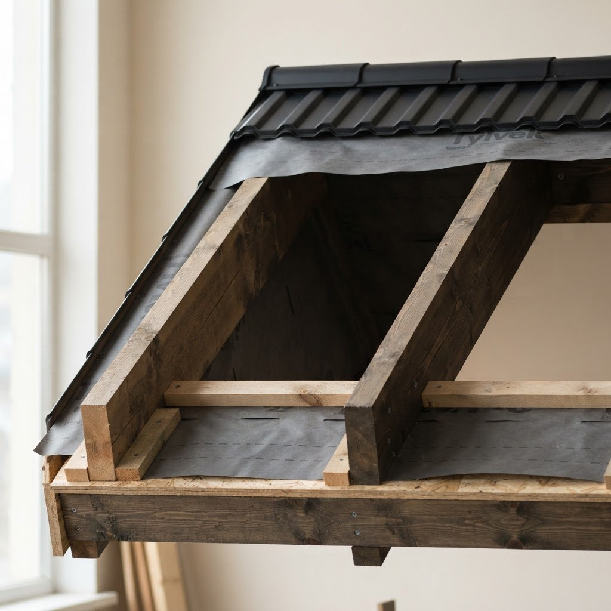
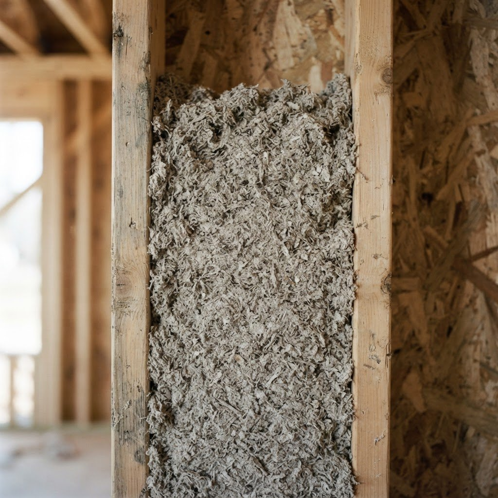

Кровля
Утепление кровельных конструкций после оценки основания и доступа к полости.
Утепляем кровлю, перекрытия, каркасные строения, ниши и полости эковатой. Подготовим основание, подшьём плёнку и доску, выполним сопутствующие работы.

Зажмите кнопку мыши и проведите по схеме либо коснитесь нужного места на телефоне. Вы также можете выбрать участок клавиатурой.
Наведите курсор или проведите пальцем по синему участку, чтобы увидеть, какая часть конструкции требует внимания.
Схема показывает принцип устранения пустот, но не измеряет реальные теплопотери. Материал, толщину и подготовку согласуем после осмотра.

Утепление кровельных конструкций после оценки основания и доступа к полости.
Заполнение пространства между балками перекрытия.
Теплоизоляция полостей каркасных элементов.
Работа с участками сложной формы и закрытыми пространствами.
Подшивка плёнкой и доской, выравнивание полов и другие нужные операции.
Сопутствующие работы в рамках проекта.
До утепления оцениваем состояние полости, доступ и необходимые подготовительные работы. Только после осмотра можно согласовать объём и стоимость.



Замер и консультация бесплатны. Цена работ договорная: зависит от конструкции, площади, доступа, объёма подготовки и сопутствующих работ. Окончательную стоимость обсуждаем после осмотра.
Заказать бесплатный замер